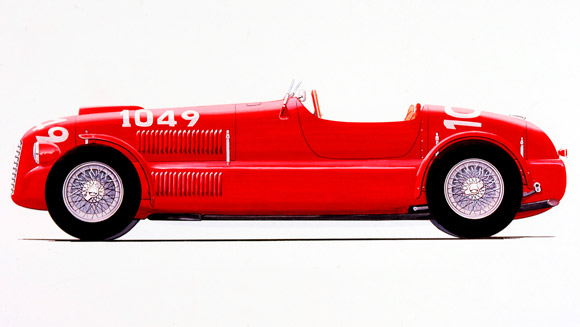

OVERVIEW
1948
166 Inter Sport
The Tipo 166 two-litre engine spawned a
whole range of sports and single-seater
models. In fact, the 166 Sport provided
a crossover point between the two
categories because, as the Ferrari
catalogue of the day pointed out, it
could be adapted for international
races (hence the name Inter) for
two-seater and single-seater sports
cars. This was possible thanks to the
fact that the lights and the mudguards
could be attached and detached to suit
the rules, making this a multipurpose
model.
More information on www.ferrari.com